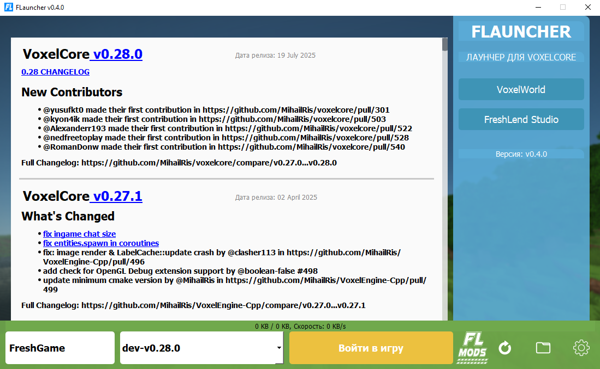
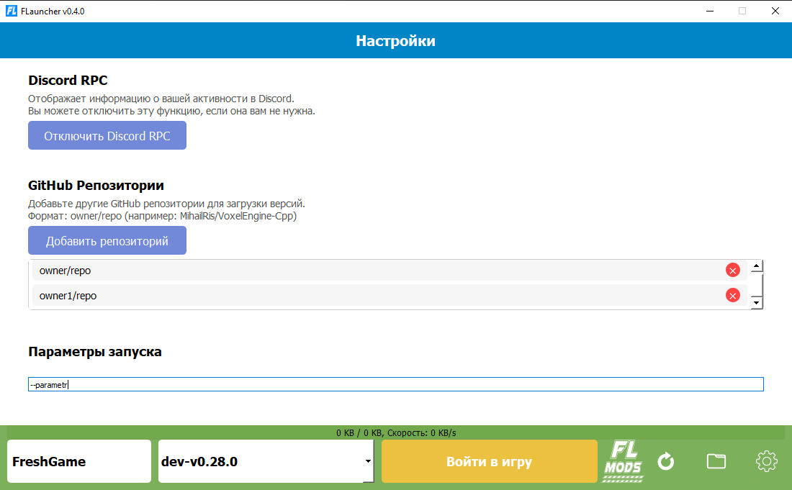
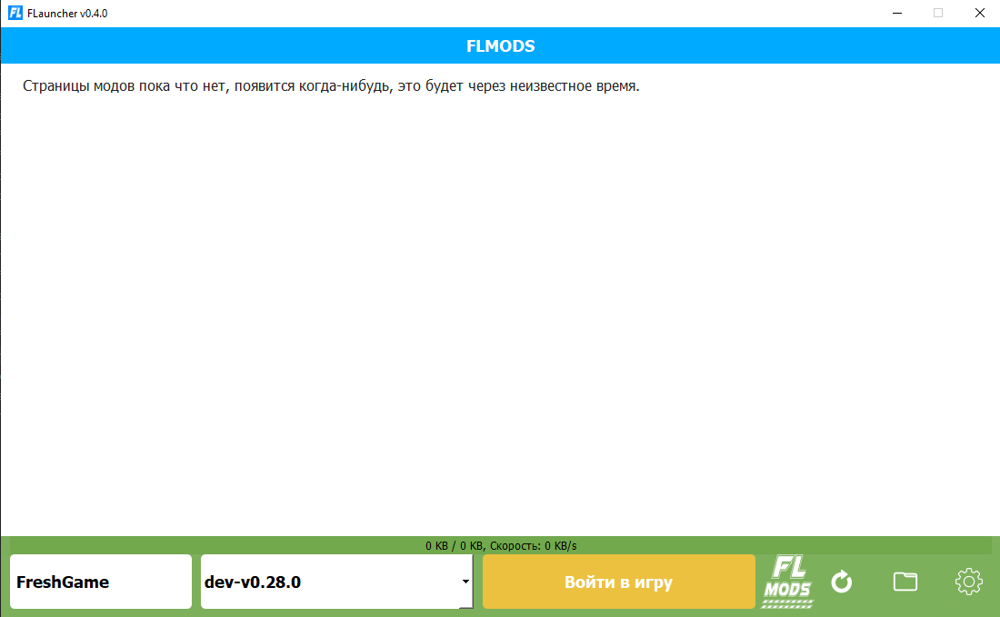
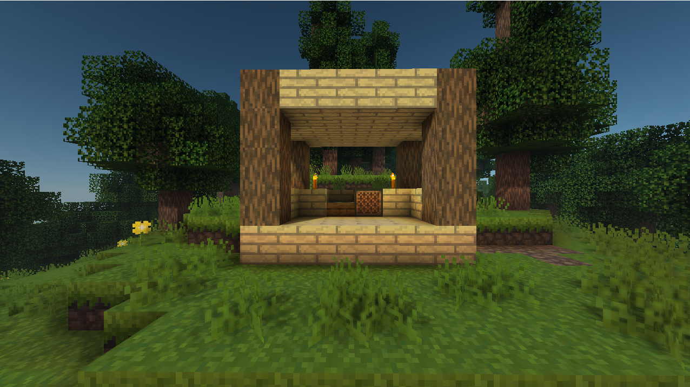

Изображение 1/5



FLauncher В РАЗРАБОТКЕ
FLauncher - VoxelCore Лаунчер на Python
FLauncher - это удобный красивый лаунчер похожий на TLauncher но только для VoxelCore
Особенности: Работа в оффлайн режиме, Discord Rich Presence, Интеграция других репозиториев, Похож на TLauncher
Версии и обновления
Версия 0.4.1
23 июля 2025Баг фиксы.
Исправления:
- Исправлен баг при попытки найти новую версию лаунчера без интернета
- Обновлено создания конфига для Quartz
Версия 0.4.0
25 мая 2025Значительно обновление
Новые возможности:
- Полная поддержка Discord RPC
- Добавлена возможность отключения Discord RPC
- Добавлена возможность подключить другие репозитории.
- Добавлены параметры запуска
- Добавлено оповещение об новой версии лаунчера.
- Версии прогружаются динамически, лаунчер открывается быстрее.
Версия 0.3.0
9 февраля 2025Исправления и улучшения
Новые возможности и исправления:
- Добавлено поле ввода ника с поддержкой Neutron
- Исправлена сортировка версий
Версия 0.2.4
15 января 2025Исправление бага
Исправления:
- Исправлен баг с discord rich presence - лаунчер не запускался без запущенного дискорда или интернета
Версия 0.2.3
22 декабря 2024Discord Rich Presence
Новые возможности:
- добавлен Discord Rich Presence (пока только главная страница).
Версия 0.2.2
18 декабря 2024Версия 0.2.1
18 декабря 2024Критическое обновление.
Исправления:
- Исправлен баг со скачиванием и запуском игры
- Исправлен рандомный вылет
Версия 0.2.0
18 декабря 2024Изменение дизайна.
Новые дизайн:
- Изменён дизайн на более похожий на TLauncher
Версия 0.1.0
17 декабря 2024Начало Лаунчера.
Базовые возможности:
- Базовое подключение к Github API
- Прогрузка версий
- Запуск и автоматическое скачивание версий